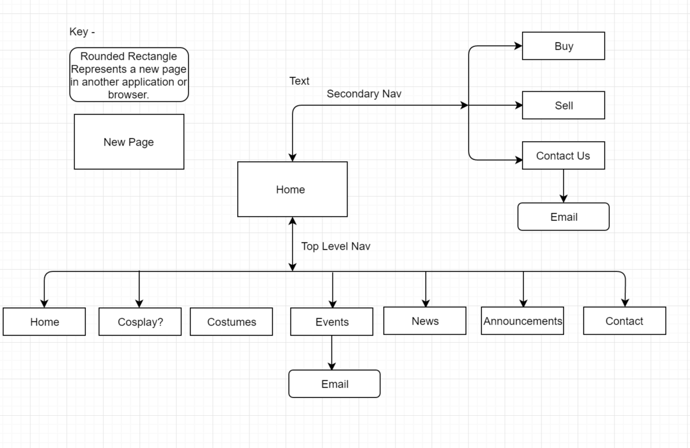

Name: Justin Nix
Login: ...
The purpose of the website is to increase the number of participants that attend the monthly "CossiePlay Party", become more known to their target audience and to additionally increase the number of costumes created each week. Furthermore, CossiePlay wants to change its target audience from a mid age bracket to younger kids in highschool and young adults in order to help achieve this goal. This will benefit the client as their business will receive greater income and profit more.
In order to evaluate the success of the product (the website created) we must record and keep track of a number of different types of data.
The site designed will aim to target a younger age bracket, that is, people who are in high school (15-18) and younger adults (18-25).
Additionally, out of this group, the audience will further be narrowed down to specific characterstics held by people. These characteristics include people who are; into comics, fantasy, roll play ect, unique and like to be different to social norms and love expressing themselves.
With this in mind, I will specifically cater the wesbite to accomodate to this audience, by attempting to make the information provided by the client into what appears as less dense information as younger users dont like reading. Furthermore, I will include as many pictures as possible and implement as many accelerators as possible/ metaphors.
 ...